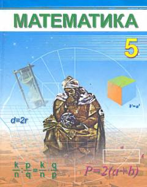

М55-sinf o'quvchilari uchun matematika fanidan darslik.
Ushbu darslik umumta'lim maktablarining 5-sinf o'quvchilari uchun matematika fanidan tayyorlangan. Unda natural sonlar, arifmetik amallar va boshlang'ich matematik tushunchalar sodda tilda tushuntirilgan. Kitob o'quvchilarning mantiqiy fikrlashini rivojlantirishga xizmat qiladi.